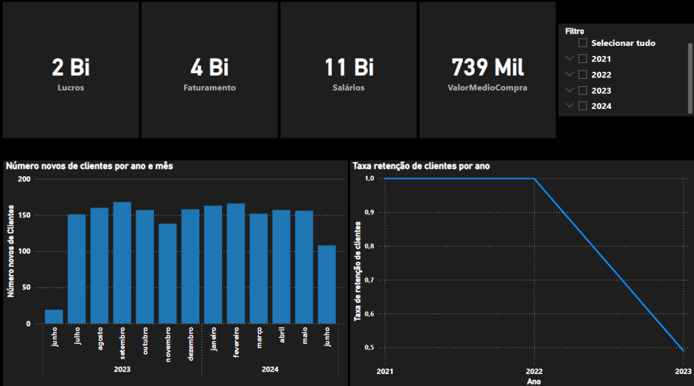

Power BI
Descrição
O Power BI é utilizado para visualizar e analisar os dados refinados da camada Gold. Ele permite a criação de dashboards interativos e relatórios detalhados para tomada de decisão.
Objetivo
O objetivo do Power BI no projeto é fornecer uma plataforma de visualização de dados onde usuários podem explorar e interagir com os dados refinados para obter insights valiosos.
Processos
Conexão ao Azure Synapse
-
Importação de Dados:
- Conecte-se ao Azure Synapse diretamente do Power BI.
- Importe as tabelas refinadas da camada Gold para o Power BI.
-
Modelagem de Dados:
- Crie relacionamentos entre tabelas.
- Defina medidas e colunas calculadas para análise.
Exemplos de Dashboards
Dashboard de Vendas
- KPIs (Indicadores-Chave de Desempenho): -- Exibe o totais de Lucros, Faturamento, Salários e Valor médio de Compra.
- Gráficos: -- Número deeovos clientes por ano e mês -- Taxa de retenção de cliente por ano
Exemplos de Visualizações

Ferramentas Utilizadas
- Power BI Desktop: Para desenvolvimento de dashboards e relatórios.
- Power BI Service: Para publicação e compartilhamento de dashboards e relatórios.
- Conectores do Power BI: Para integração com Azure Synapse e outras fontes de dados.